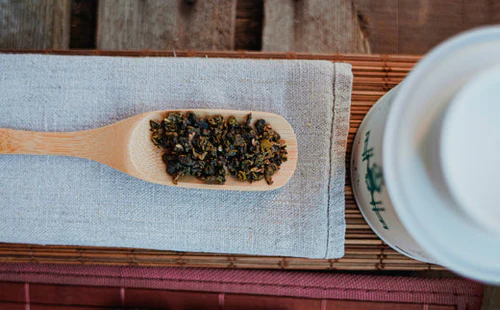
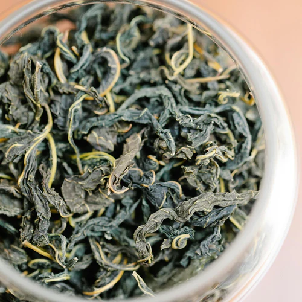
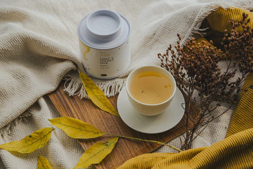

Oolong Tea
Savor centuries-old traditions with a cup of Oolong that unfolds its complex, multi-layered notes best in multiple infusions.
BLATTÉ Magazine
Oolong Tea & more

Our Guide to Oolong Tea
We introduce you to the different types of tea. This time: Oolong tea.

Tie Guan Yin
Tie Guan Yin refers to both a specific variety of the Camellia sinensis tea plant and the Chinese Oolong tea made from it. Originally, this tea variety comes from the Anxi region in the renowned tea province of Fujian. However, it's increasingly being grown in Taiwan as well. This floral Oolong variety is one of the most popular teas in China.

Our Guide to Yellow Tea
Yellow tea is considered an insider tip among tea connoisseurs. Discover the rare tea specialty from China with us.

Attention, Mindfulness: is it all hype or is there something to it?
Mindfulness is often hailed as a miracle cure - but what's really behind it?